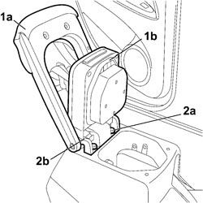

7040L35 ARM REST ON TUNNEL TRIM WITH ODMENT TRAY R R WITH TUNNEL TRIM REMOVED
- Path
- Procedures > 70 FITTINGS > 7040 BODY INTERIOR FITTINGS AND TRIM > 7040L CABIN FLOOR COVERING > 7040L35 ARM REST ON TUNNEL TRIM WITH ODMENT TRAY R R WITH TUNNEL TRIM REMOVED
- Kind
- repair procedure (removal / refitting; the operation number is the code)
- Applies to
- all engines; all production periods
- Interactive page
- https://sloeber94.github.io/elrnDB-fCrm/en/#/194001078
Applies to: all engines; all production periods
 Removing
Removing
 Refitting
Refitting1. Lift up the armrest (1a) and the cover (1b)
2. Undo the two fixing bolts (2a) and remove the armrest assembly (2b) from the tunnel cover.

Applies to: all engines; all production periods
Refitting
Removing- Check that the armrest is not damaged.
- Position the armrest assembly in the housing in the tunnel cover and tighten the two fixing bolts.